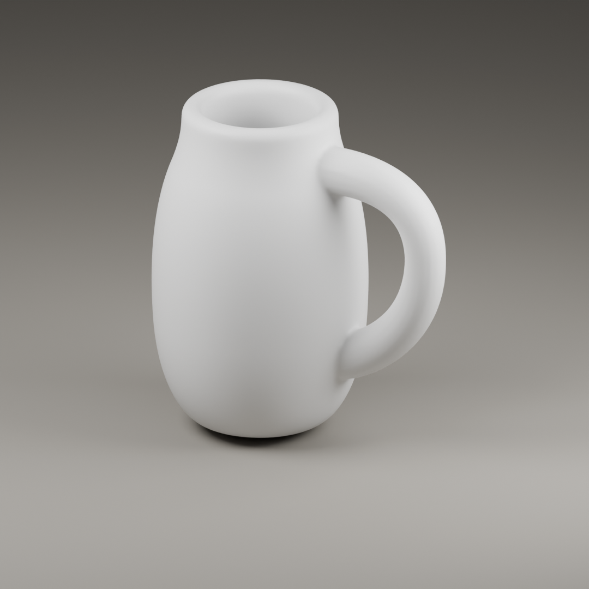
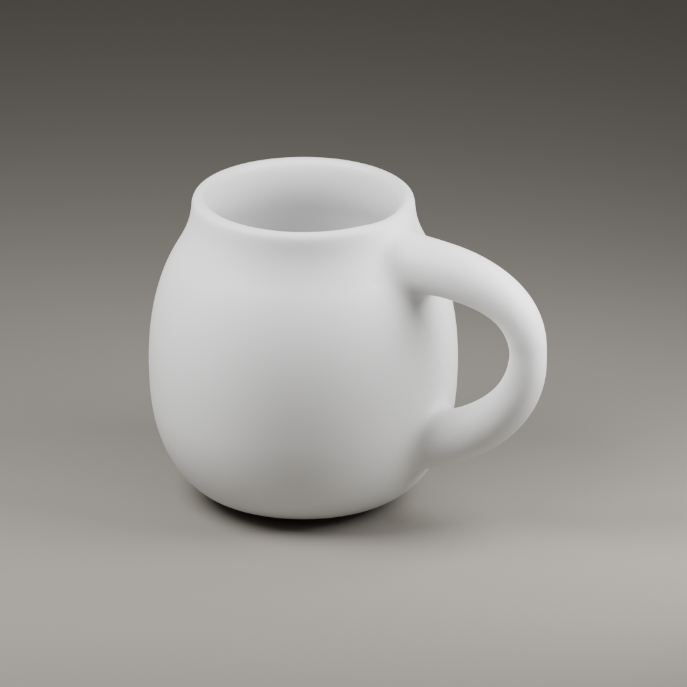
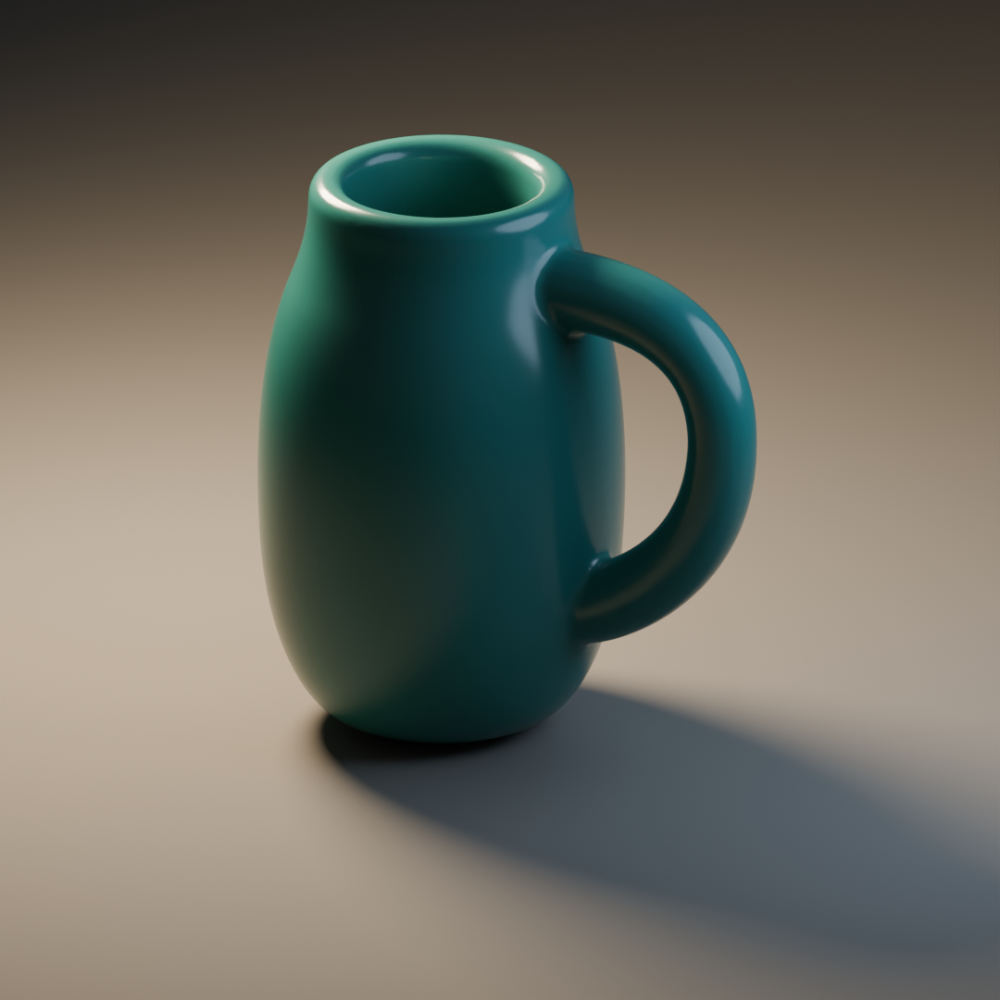
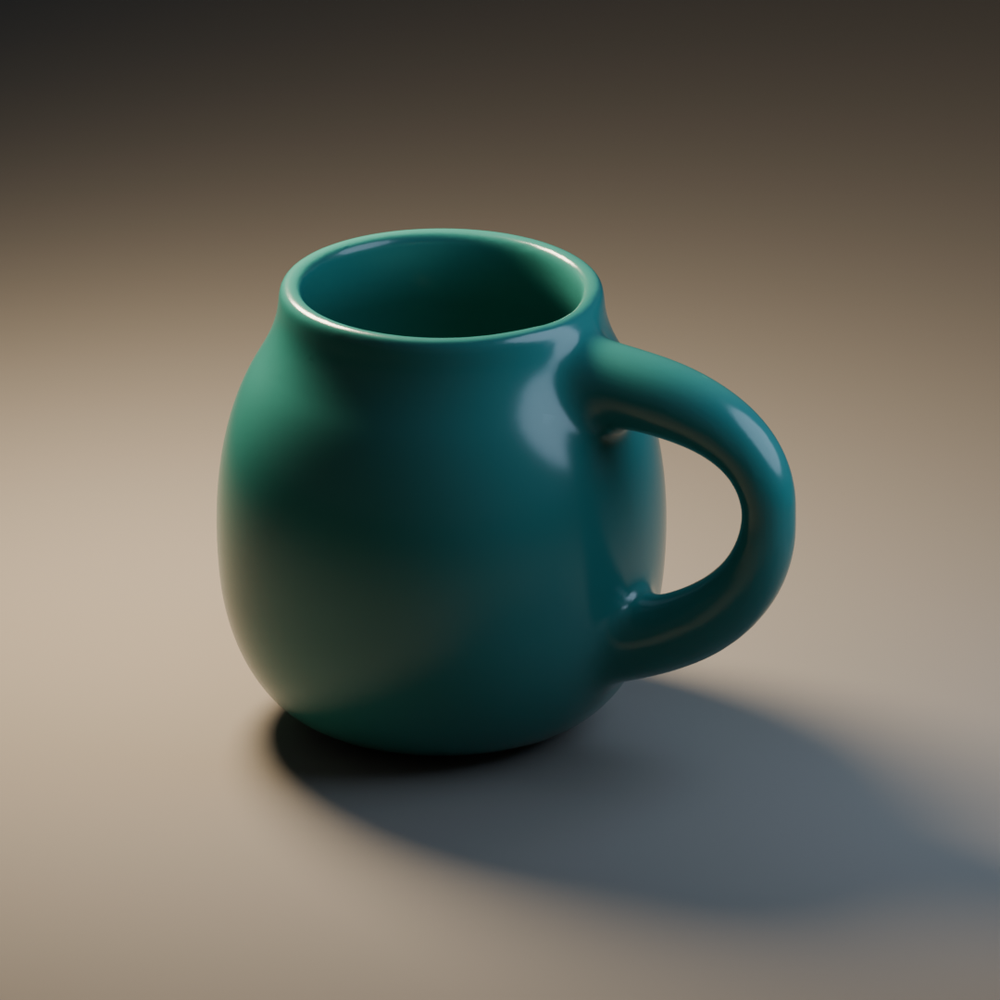

Construction study · original authored exampleOne body.
A handle that belongs to it.
The proposition is a low, settled volume with a light outward reach. Compare the upright construction with its broader revision, then change only the finish or illumination. The GLBs below are the actual delivery meshes.
Interactive renderer starting; local stills and Blender source are available below.
Drag to orbit; scroll to zoom. Geometry, surface and illumination are independent. A warm highlight can reveal a fillet, but cannot widen the body, open the handle or thin the rim. ToyCar keeps its original materials by default: it is a separate finished-asset reference, not a construction example.
Change the form; then dress the same forms
These Blender Cycles stills share an orthographic camera and framing. Each row shares its material and lights. The browser uses Three.js with screen-space ambient occlusion to describe recesses and contact; this view-dependent approximation is not Cycles illumination.

Upright · neutralThe tall axis dominates. The thick rim and near-uniform handle compete with the narrow body.

Low-bellied · neutralWidth grows while height falls. A thinner lip opens the cavity; wider root transitions join a lighter outer reach.

Upright · finish and light onlyRicher reflections describe the same tall proportions and thick rim. Surface treatment has not made the form revision.

Low-bellied · finish and light onlyThe changed body and handle survive the new finish. Grazing reflections expose the root transitions and lip.